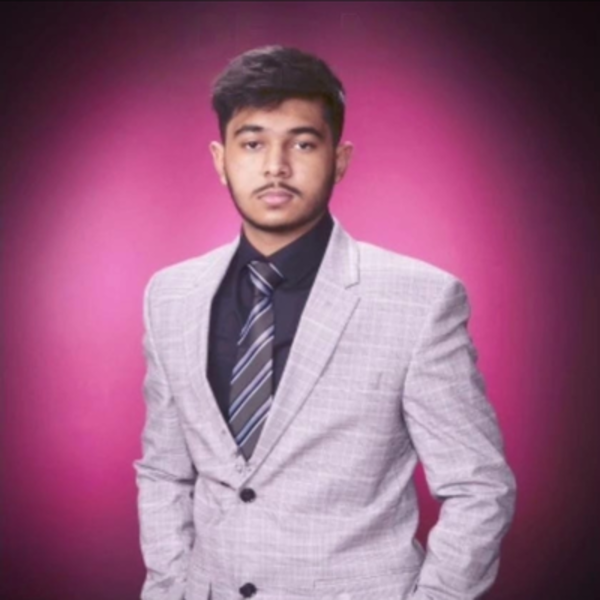

Sheikh Muhammad Mazin
B.Sc. Student · DANSA Lab
My name is Sheikh Muhammad Mazin, and I am a Software Engineering student at the University of Calgary. I have always enjoyed problem solving, which naturally led me to coding and technology. Over the course of my studies, I have gained experience with programming, software design, and data analysis, and I take pride in being able to approach challenges with both logic and creativity.
One of my biggest projects so far has been an independent content analysis of TikTok videos. This work involved gathering data, cleaning it, and applying topic modeling techniques to uncover patterns in online content. While the project is not yet published, completing it taught me a lot about managing large datasets, using advanced tools, and presenting results in a clear and meaningful way.
Outside of academics, I love gaming, which keeps me sharp with strategy and quick thinking, and I enjoy reading, which helps me learn continuously and expand my perspective. Looking to the future, I hope to keep improving as a software engineer and researcher, with the goal of contributing to projects that are both innovative and impactful.